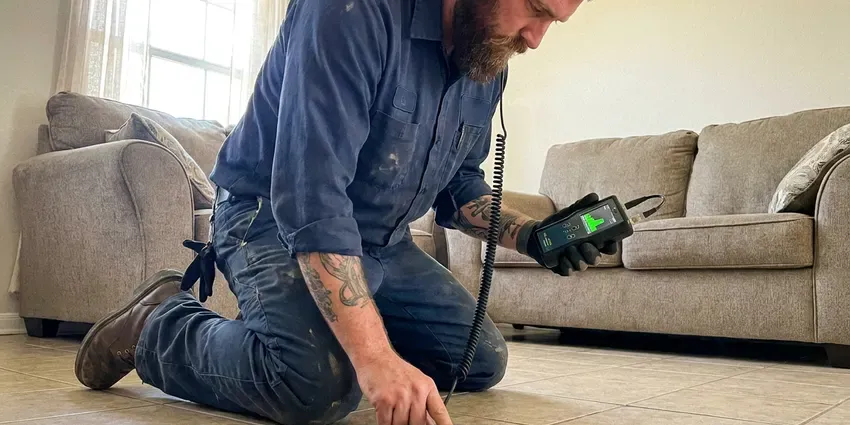

Sewer Line Inspection in Surprise, AZ
Our sewer line inspections in Surprise, AZ reveal roots, cracks, bellies and buildup with recorded video and locating marks.
- Same-Day Camera Inspections
- Recorded HD Video Included
- Depth and Location Marking
- Pre-Purchase Inspection Reports

Book a Sewer Camera Inspection Before You Buy a Home in Surprise, AZ.
We explain what the camera finds and give you clear options if repairs are needed.
Sewer Line Inspection in Surprise, AZ With HD Camera Video and Clear Reports
CVR Plumbing provides sewer line inspections for homebuyers, sellers, property managers and homeowners with recurring drain issues. You get a recorded video, a written summary and straightforward repair recommendations if any are needed.
Our expertise includes:
- HD push camera inspection of 2 to 8 inch sewer lines
- Sonde locating to mark depth and position of defects
- Recorded video and written reports for real estate transactions

Additional Plumbing Maintenance Services in Surprise, AZ
Our maintenance and specialty plumbing services in Surprise, AZ catch small problems before they become emergencies.


Customers
Why Choose CVR Plumbing for Sewer Line Inspection in Surprise, AZ?
We do not just record a video and leave. We walk you through the footage, explain what each finding means and give you honest options.
- Clear Video, High-definition footage shows cracks, roots and offsets clearly.
- Exact Locations, We mark the depth and location of each problem so repairs are targeted.
- Plain Explanations, We explain the findings in everyday language and recommend practical next steps.
Citywide Coverage
We inspect sewer lines across Surprise, from older neighborhoods with clay and cast iron laterals to newer subdivisions with PVC and ABS. Our cameras handle long runs from the house to the city main.
Experienced Team
Our technicians have inspected thousands of feet of sewer pipe and know how to read every type of defect. They can tell the difference between minor scale and a structural break.
Safety-First Approach
We sanitize our cameras and cables after every job and protect your home's floors and surfaces. Any excavation recommended after an inspection includes Arizona 811 utility locating first.
Trusted Certified Surprise Plumbing Services Professionals
At CVR Plumbing, we take pride in providing licensed, certified plumbing services throughout Surprise, AZ. Backed by leading industry credentials, our experienced plumbers combine technical skill with genuine customer care. Whether it is repair, installation, or maintenance, we follow strict safety and quality standards to deliver long-lasting results you can trust.
Call Us Now PHCC Plumbing Contractor Recognition
PHCC Plumbing Contractor Recognition Better Business Bureau (BBB) Accreditation
Better Business Bureau (BBB) Accreditation Angi Certified Pro
Angi Certified Pro ISO 9001 Quality Management Certification
ISO 9001 Quality Management CertificationThorough Sewer Line Inspection Services in Surprise, AZ
Pre-Purchase Sewer Line Inspection in Surprise
Standard home inspections usually do not include a camera look inside the sewer line. A pre-purchase inspection shows whether the line has roots, cracks, bellies or other problems before you close. That information can help you negotiate repairs or price with the seller. We provide a video and written report that fits most real estate timelines.

Root Intrusion Inspection in Surprise, AZ
Roots from mesquite, palo verde, ficus and eucalyptus trees seek out moisture in sewer joints. Over time they can fill the pipe and cause repeat backups. Our camera shows exactly where roots enter and how much of the pipe they block. We then recommend cleaning, jetting or a lasting repair like lining.
Cast Iron and Clay Pipe Condition Assessment in Surprise
Many older Arizona homes have cast iron drain lines under the slab and clay sewer laterals outside. Cast iron can corrode and develop scale, cracks and channeling along the bottom of the pipe. Clay joints shift and let roots in. Our camera inspection shows how much life the pipe has left so you can plan repairs on your timeline.
Belly and Offset Detection in Surprise, AZ
A belly is a low spot where the pipe has sagged and holds water and waste. Offsets happen when pipe sections shift out of alignment, often because of soil movement. Expansive clay soils in parts of Arizona make these problems more common. The camera shows these defects clearly, and we mark their location for repair.
Post-Clearing Sewer Camera Inspection in Surprise
After a backup is cleared, a camera inspection reveals why it happened. It might be grease, roots, a broken section or an object stuck in the line. Knowing the cause helps you avoid repeat backups. We often recommend an inspection after any main line clearing.
Sewer Line Locating and Depth Marking in Surprise, AZ
Before any repair, it helps to know exactly where your sewer line runs and how deep it is. Our camera includes a sonde transmitter that we trace with a receiver above ground. We mark the line and problem spots with paint or flags. This makes excavation or trenchless repair faster and more precise.
Commercial Sewer Line Inspection in Surprise
Restaurants, apartment complexes and commercial buildings depend on sewer lines that carry heavy use. Regular inspections help catch grease buildup, root intrusion and structural problems early. We inspect larger diameter lines and provide video reports for property managers and owners. Inspections can be scheduled after hours to avoid disruption.

Sewer Line Inspection Cost Comparison in Surprise, AZ
A standard residential sewer camera inspection usually costs $150 to $400. Inspections that require clearing first or roof access may cost more. Compared with sewer repairs that can run $3,000 to $15,000 or more, an inspection is a small investment. It can save you from buying a home with a hidden sewer problem.
Sewer Line Inspection Near Me in Surprise, AZ
When you need a sewer inspection for a home purchase or a recurring backup, a quick local appointment helps keep things on track. Our technicians serve all of Surprise and can usually inspect within a day or two. We bring cameras, locators and cleaning equipment on every visit.
Local experience matters because pipe materials and soil conditions vary across Surprise. We know which areas have older clay or cast iron and which have newer plastic lines. That helps us interpret what the camera shows accurately.
CVR Plumbing at a Glance
- Fully licensed plumbing team covering Surprise, AZ
- Same-day appointments and 24/7 emergency response
- Clear written estimates, no hidden fees
- 4.8-star rated by 713+ Arizona customers
Surprise Map
Surprise Information
- Population
- 158,285
- Area codes
- 623/480/928
- Service area
- Surprise and communities within 40 miles
- Nearby
- Peoria, Glendale, Buckeye, Phoenix
Older homes in Surprise, AZ often have cast iron and clay sewer lines exposed to thirsty tree roots and shifting desert soils, so a camera inspection is the most reliable way to know a line's true condition.
Expert Services
Trust our professionals for reliable CVR Plumbing solutions in Surprise, AZ.
Our Specialized Plumbing Services in Surprise, AZ
At CVR Plumbing, we provide a complete range of plumbing services across Surprise, AZ. From leak detection to full system installations, our team ensures fast, precise, and affordable service for both residential and commercial properties. Explore our core services below:


How Our Sewer Line Inspection Process Works in Surprise, AZ
We access the line, record the inspection, mark any problems and walk you through the results.
Request a Quote
Call (928) 470-9009 and tell us whether you need a pre-purchase inspection or have drain problems. We schedule a visit and give you the inspection price.
Camera Inspection
We feed an HD camera through a cleanout or vent and record the full length of the line. Any problems are located and marked from above ground.
Review and Report
We review the video with you and explain each finding. You receive a copy of the video and a written summary with repair options.
Frequently Asked Questions About Sewer Line Inspection in Surprise
A residential sewer camera inspection in Surprise typically costs $150 to $400. Inspections that require clearing a blockage first or roof access may cost more. We give you a price before scheduling.
A camera can find roots, cracks, breaks, bellies, offsets, grease buildup, scale and foreign objects. It also shows the pipe material and overall condition. We mark the location of each problem.
We use professional HD push cameras from manufacturers like RIDGID and other leading brands, with built-in sondes for locating. Our cameras record video and capture still images. This equipment works in lines from 2 to 8 inches.
Most residential inspections take about one hour. Longer lines or lines that need clearing first can take two to three hours. We provide the video the same day.
We can often inspect through a roof vent or by removing a toilet. If neither works, we can install a cleanout to code, which also makes future maintenance easier. We discuss options before starting.
Consumer cameras exist, but they often lack the length, clarity and locating ability of professional equipment. Interpreting footage also takes experience. A professional inspection gives you reliable results and a report you can use.
Yes, especially for homes more than 20 years old or with large trees in the yard. Standard home inspections usually do not include a sewer camera. Finding a problem before closing can save you thousands.
Multiple slow drains, gurgling toilets, sewage odors and backups in the lowest fixtures are common signs. Wet or sunken spots in the yard over the sewer path can also point to a problem. An inspection shows the cause.
What People Are Saying About Our Plumbing Experts?

Sofia M.
Two new toilets installed in one visit, no mess left behind, and the tech even adjusted a faucet he noticed was dripping. Fair pricing and really friendly.
Toilet Installation · Goodyear, AZ
Emily R.
I called CVR Plumbing for plumbing repair, and the technician was fast, polite, and thorough. They explained the problem clearly and fixed it the same day. I will definitely hire them again. Highly recommended!
Plumbing Repair · Phoenix, AZ
Robert G.
The trenchless sewer replacement saved our front yard. They walked us through the camera inspection footage first so we knew exactly what we were paying for.
Sewer Line Replacement · Buckeye, AZJames P.
Our commercial plumbing system had a leak under the sink, and CVR Plumbing handled it professionally. The plumbers arrived quickly and restored everything without disruption to our customers.
Commercial Plumbing · Goodyear, AZ
Patricia H.
We had a slab leak that two other companies could not find. CVR Plumbing located it in under an hour, explained our options, and the price matched the quote to the dollar.
Slab Leak Repair · Goodyear, AZ
Mark T.
When our office needed drain cleaning, CVR Plumbing provided quick, reliable service. The plumber arrived on time and made sure every drain flowed perfectly before leaving. Very satisfied.
Drain Cleaning · Goodyear, AZ